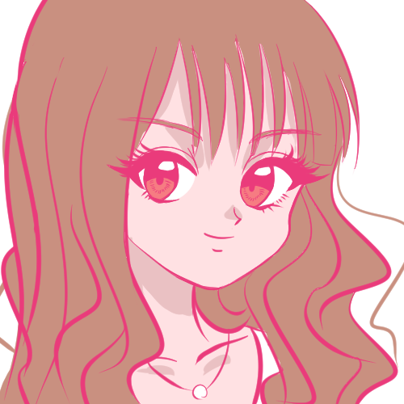

ひでばん 髪色がコロコロ変わっていたが最近会ったら茶髪に落ち着いていた。二人でくら寿司行ってビッくらポン！に何回も挑戦したが一回も当たらなかった。隣の席の小さい女の子は当たっていた。キティちゃんが好きだと思っていたが実はキティちゃんを好きなのはママで本人はクロミちゃんが好きらしい。最近ポケモンGOを始めた。麻雀仲間。
ちさみん 看護師。毎日忙しそう。よく物をなくす。過酷な看護業務の荒波にもまれて日に日にメンタルが強固になっていっている。本人曰く注射が上手いらしい。韓国が好き。韓国語が喋れる。ものすごい辛党。「イプニ」という名前の猫を飼っている。
ねぎさ 高校でサッカーをやっていた。前の家から遠くに引っ越してから会う頻度が減った（最後に会ったのは去年の10月くらい）高校の卒業旅行で一緒にディズニーシーに行ったが絶叫系が苦手だったらしくほとんど乗らなかった。末っ子だが誰よりもしっかりしている。酒ばかり飲んでる。
かのぴぴ  いつも楽しそう。筋トレをしていたが今は休んでポケモンGOをしている。ハロウィンの時にひでばんとガングロギャルのコスプレをして人の手に剥がしたつけまつげをつける。お兄ちゃんとお母さんに顔が似ている。最近眼鏡を買いに来てくれた。